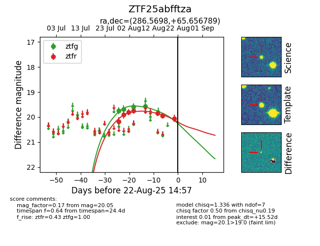

Target ZTF25abfftza at 2025-08-26 10:17, see:
FINK: fink-portal.org/ZTF25abfftza
Lasair: lasair-ztf.lsst.ac.uk/objects/ZTF25abfftza
ALeRCE: alerce.online/object/ZTF25abfftza
alt names
ZTF25abfftza (ztf,fink)
coordinates:
equatorial (ra, dec) = (286.5698,+65.65675)
galactic (l, b) = (96.3766,+23.06052)
photometry
last atlaso=19.75, ztfg=19.60, ztfr=19.96
2 atlaso, 3 ztfg, 8 ztfr detections
